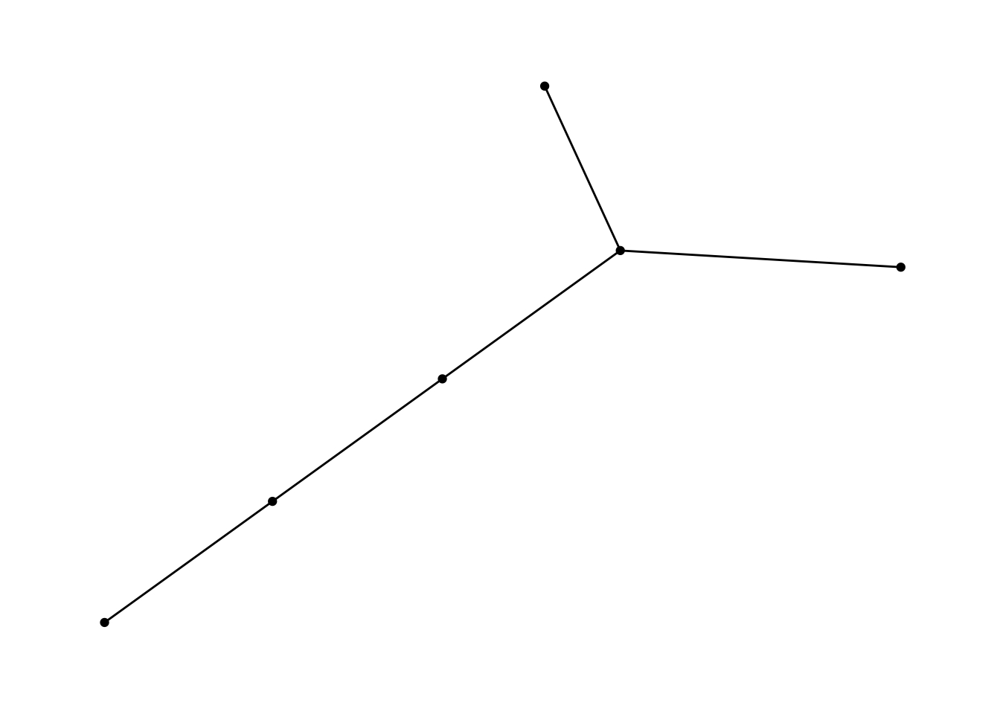
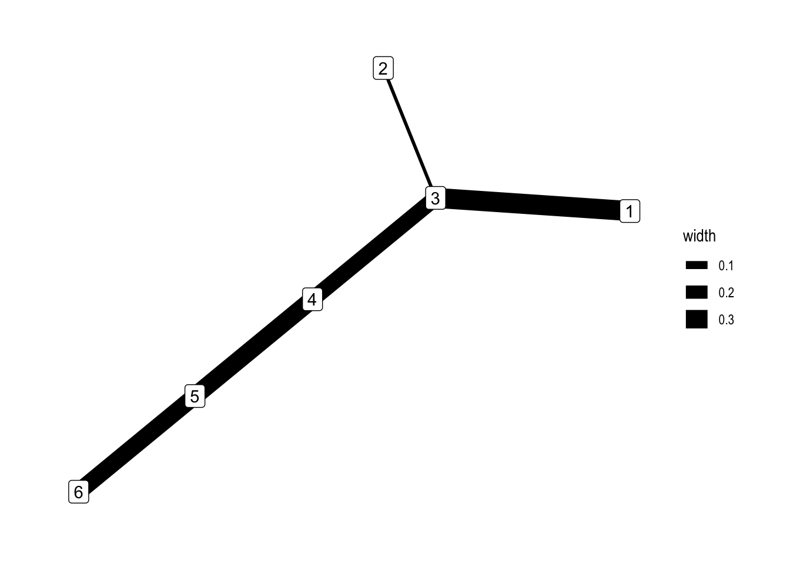

library(tidyverse)
library(ggraph)
library(tidygraph)
theme_set(theme_graph())Introduction to Networks and Trees
Typical tasks and example network datasets.
Reading 1 (Chapter 9), Reading 2, Recording, Rmarkdown
Networks and trees can be used to represent information in a variety of contexts. Abstractly, networks and trees are types of graphs, which are defined by (a) a set \(V\) of vertices and (b) a set \(E\) of edges between pairs of vertices.
It is helpful to have a few specific examples in mind,
- The Internet: \(V = \{\text{All Webpages}\}, \left(v, v^{\prime}\right) \in E\) if there is a hyperlink between pages \(v\) and \(v^{\prime}\).
- Evolutionary Tree: \(V = \{\text{All past and present species}\}, \left(v, v^{\prime}\right) \in E\) if one of the species \(v\) or \(v^{\prime}\) is a descendant of the other.
- Disease Transmission: \(V = \{\text{Community Members}\}, \left(v, v^{\prime}\right) \in E\) if the two community members have come in close contact.
- Directory Tree: \(V = \{\text{All directories in a computer}\}, \left(v, v^{\prime}\right) \in E\) if one directory is contained in the other.


Either vertices or edges might have attributes. For example, in the directory tree, we might know the sizes of the files (vertex attribute), and in the disease transmission network we might know the duration of contact between individuals (edge attribute).
An edge may be either undirected or directed. In a directed edge, one vertex leads to the other, while in an undirected edge, there is no sense of ordering.
In R, the
tidygraphpackage can be used to manipulate graph data. It’stbl_graphclass stores node and edge attributes in a single data structure. andggraphextends the usual ggplot2 syntax to graphs.
E <- data.frame(
source = c(1, 2, 3, 4, 5),
target = c(3, 3, 4, 5, 6)
)
G <- tbl_graph(edges = E)
G# A tbl_graph: 6 nodes and 5 edges
#
# A rooted tree
#
# Node Data: 6 × 0 (active)
#
# Edge Data: 5 × 2
from to
<int> <int>
1 1 3
2 2 3
3 3 4
# ℹ 2 more rowsThis tbl_graph can be plotted using the code below. There are different geoms available for nodes and edges – for example, what happens if you replace geom_edge_link() with geom_edge_arc()?
ggraph(G, layout = 'kk') +
geom_edge_link() +
geom_node_point()
- We can mutate node and edge attributes using dplyr-like syntax. Before mutating edges, it’s necessary to call
activate(edges).
G <- G %>%
mutate(
id = row_number(),
group = id < 4
) %>%
activate(edges) %>%
mutate(width = runif(n()))
G# A tbl_graph: 6 nodes and 5 edges
#
# A rooted tree
#
# Edge Data: 5 × 3 (active)
from to width
<int> <int> <dbl>
1 1 3 0.330
2 2 3 0.0109
3 3 4 0.248
4 4 5 0.288
5 5 6 0.272
#
# Node Data: 6 × 2
id group
<int> <lgl>
1 1 TRUE
2 2 TRUE
3 3 TRUE
# ℹ 3 more rowsNow we can visualize these derived attributes using an aesthetic mapping within the geom_edge_link and geom_node_point geoms.
ggraph(G, layout = "kk") +
geom_edge_link(aes(width = width)) +
geom_node_label(aes(label = id))
Example Tasks
What types of data that are amenable to representation by networks or trees? What visual comparisons do networks and trees facilitate?
Our initial examples suggest that trees and networks can be used to represent either physical interactions or conceptual relationships. Typical tasks include,
- Searching for groupings
- Following paths
- Isolating key nodes
By “searching for groupings,” we mean finding clusters of nodes that are highly interconnected, but which have few links outside the cluster. This kind of modular structure might lend itself to deeper investigation within each of the clusters.
- Clusters in a network of political blogs might suggest an echo chamber effect.
- Gene clusters in a differential expression study might suggest pathways needed for the production of an important protein.
- Clusters in a recipe network could be used identify different culinary techniques or cuisines.

By “following paths,” we mean tracing the paths out from a particular node, to see which other nodes it is close to.
- Following paths in a citation network might reveal the chain of publications that led to an important discovery.
- Following paths in a recommendation network might suggest other users who might be interested in watching a certain movie.

“Isolating key nodes” is a more fuzzy concept, usually referring to the task of finding nodes that are exceptional in some way. For example, it’s often interesting to find nodes with many more connections than others, or which link otherwise isolated clusters.
- A node with many edges in a disease transmission network is a superspreader.
- A node that links two clusters in a citation network might be especially interdisciplinary.
- A node with large size in a directory tree might be a good target for reducing disk usage.

- If you find these questions interesting, you might enjoy the catalog of examples on the website VisualComplexity.